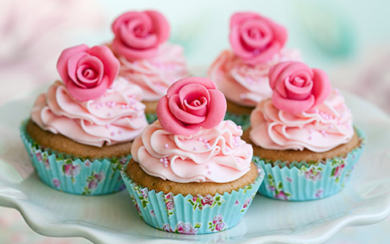

A cupcake (also British English: fairy cake; Australian English: patty cake or cup cake) is a small cake designed to serve one person, which may be baked in a small thin paper or aluminium cup. As with larger cakes, icing and other cake decorations, such as sprinkles, may be applied.
A standard cupcake uses the same basic ingredients as standard-sized cakes: butter, sugar, eggs, and flour. Nearly any recipe that is suitable for a layer cake can be used to bake cupcakes. The cake batter used for cupcakes may be flavored or have other ingredients stirred in, such as raisins, berries, nuts, or chocolate chips. Because their small size is more efficient for heat conduction, cupcakes bake much faster than a normal layered cake. Cupcakes may be topped with frosting or other cake decorations. They may be filled with frosting or pastry cream. For bakers making a small number of filled cupcakes, this is usually accomplished by using a spoon or knife to scoop a small hole in the top of the cupcake. In commercial bakeries, the filling may be injected using a syringe. Elaborately decorated cupcakes may be made for special occasions.
In the early 21st century, a trend for cupcake shops, which are specialized bakeries that sell little or nothing except cupcakes, developed in the United States, playing off of the sense of nostalgia evoked by the cakes. In New York City, cupcake shops like Magnolia Bakery gained publicity in their appearances on popular television shows like HBO's Sex and the City. Crumbs Bake Shop, a publicly traded business running the largest cupcake shop chain in the U.S., reached its peak stock price in 2011. Declining sales, due to competition from locally owned mom-and-pop specialty stores as well as increased competition from grocery stores, caused a sharp decline in the company's prospects and stock price in 2013.
Source: Wiki